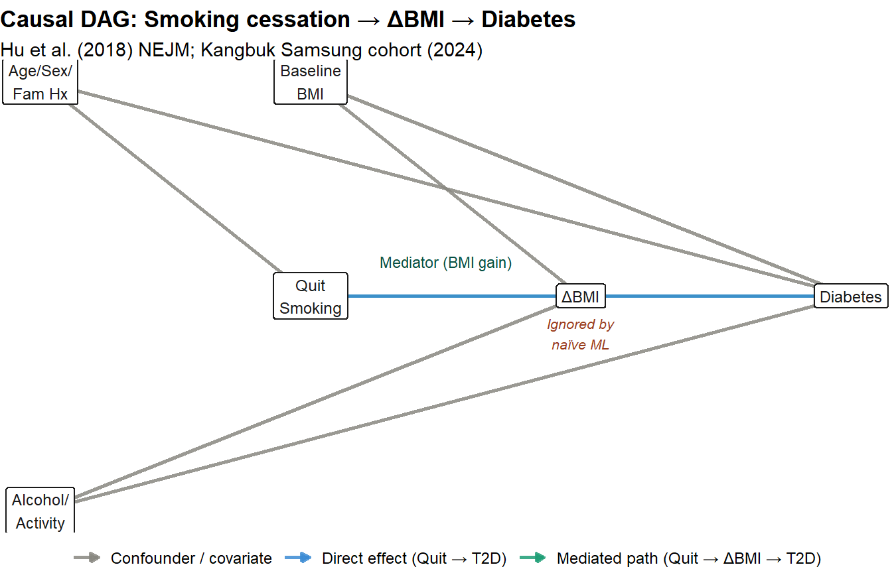
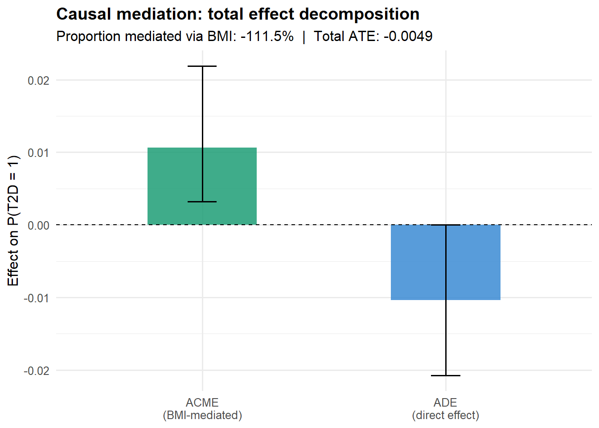
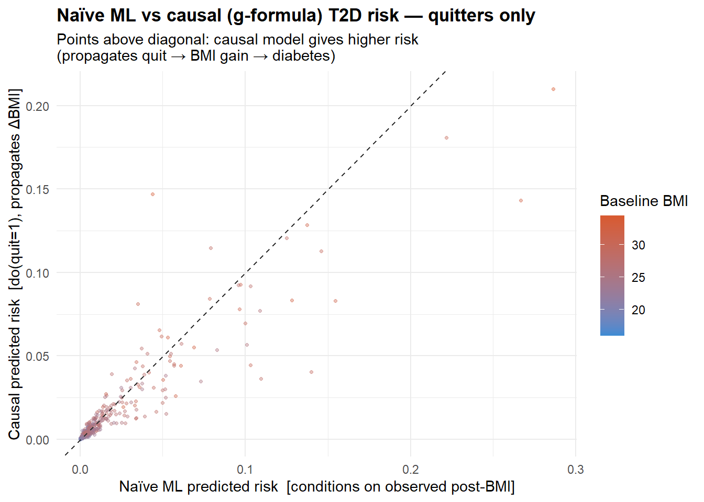
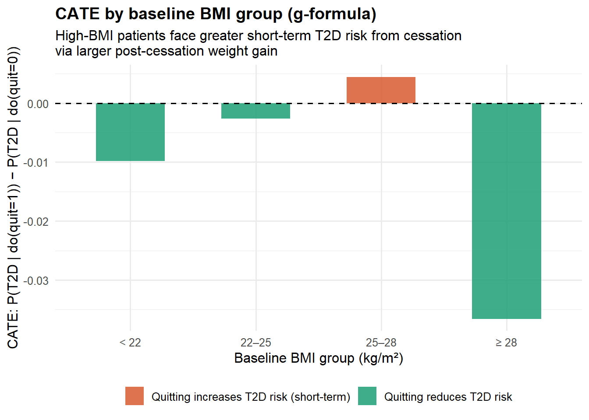

Code
pkgs <- c("ggplot2", "mediation")
for (p in pkgs) if (!requireNamespace(p, quietly = TRUE)) install.packages(p)
library(ggplot2)
library(mediation)Arda
June 28, 2026
Feuerriegel et al. (2024) argue that standard ML pipelines fail when estimating treatment effects because they ignore the causal structure linking treatment, mediators, and outcomes. Their canonical example:
“Consider a patient with a high body mass index whose doctor recommends quitting smoking, and for whom the diabetes risk should be predicted. Literature from traditional ML would suggest using both the body mass index and smoking behavior to predict the diabetes risk under a smoking versus no-smoking scenario; however, this approach would ignore that stopping smoking would also change a patient’s body mass index.”
This document implements a principled causal analysis of exactly that example using three approaches:
| Approach | Description | Validity |
|---|---|---|
| (A) Naïve ML | Logistic regression on post-treatment BMI | ❌ Biased (conditions on mediator) |
| (B) Causal mediation | Decomposes total effect into direct + BMI-mediated (Imai, Keele, and Tingley 2010) | ✅ Correct decomposition |
| (C) G-formula / SCM | Intervenes do(quit=1), propagates through BMI |
✅ Correct counterfactual ATE |
The synthetic cohort is calibrated to three published sources:
The assumed structural equation model:
\[ \begin{aligned} \text{BMI}_0 &= f(\text{Age, Sex, FamHx, Alcohol, Activity}) + \varepsilon_1 \\ \text{Quit} &= \text{Bernoulli}\!\left(\sigma(\text{Age, Sex, BMI}_0, \text{Activity})\right) \\ \Delta\text{BMI} &= 0.90\,\text{Quit} + 0.05\,(\text{BMI}_0-23)\cdot\text{Quit} + \cdots + \varepsilon_2 \\ \text{T2D} &= \text{Bernoulli}\!\left(\sigma(1.5\,\Delta\text{BMI} - 0.30\,\text{Quit} + \cdots)\right) \end{aligned} \]
The key path ignored by naïve ML is Quit → ΔBMI → T2D.
dag_nodes <- data.frame(
node = c("Quit\nSmoking", "ΔBMI", "Diabetes", "Baseline\nBMI",
"Age/Sex/\nFam Hx", "Alcohol/\nActivity"),
x = c(3, 5, 7, 3, 1, 1),
y = c(3, 3, 3, 5, 5, 1)
)
dag_edges <- data.frame(
from = c("Quit\nSmoking","ΔBMI","Baseline\nBMI","Baseline\nBMI",
"Age/Sex/\nFam Hx","Age/Sex/\nFam Hx","Alcohol/\nActivity",
"Alcohol/\nActivity","Quit\nSmoking"),
to = c("ΔBMI","Diabetes","ΔBMI","Diabetes",
"Quit\nSmoking","Diabetes","ΔBMI","Diabetes","Diabetes"),
type = c("mediated","mediated","conf","conf",
"conf","conf","conf","conf","direct")
)
dag_coords <- setNames(dag_nodes[, c("x","y")], c("x","y"))
rownames(dag_coords) <- dag_nodes$node
edges_plot <- do.call(rbind, lapply(seq_len(nrow(dag_edges)), function(i) {
f <- dag_edges$from[i]; t <- dag_edges$to[i]
data.frame(x = dag_coords[f,"x"], y = dag_coords[f,"y"],
xend = dag_coords[t,"x"], yend = dag_coords[t,"y"],
type = dag_edges$type[i])
}))
ggplot() +
geom_segment(
data = edges_plot,
aes(x = x, y = y, xend = xend, yend = yend, colour = type),
arrow = arrow(length = unit(0.18, "cm"), type = "closed"),
linewidth = 0.9, alpha = 0.85
) +
geom_label(
data = dag_nodes,
aes(x = x, y = y, label = node),
size = 3.2, fill = "white", colour = "#1a1a1a",
label.size = 0.4, label.padding = unit(0.3, "lines")
) +
scale_colour_manual(
values = c("mediated" = "#1D9E75", "direct" = "#3B8BD4", "conf" = "#888780"),
labels = c("mediated" = "Mediated path (Quit → ΔBMI → T2D)",
"direct" = "Direct effect (Quit → T2D)",
"conf" = "Confounder / covariate")
) +
annotate("text", x = 4, y = 3.32,
label = "Mediator (BMI gain)", size = 3, colour = "#085041") +
annotate("text", x = 5, y = 2.65,
label = "Ignored by\nnaïve ML", size = 2.8,
colour = "#993C1D", fontface = "italic") +
labs(title = "Causal DAG: Smoking cessation → ΔBMI → Diabetes",
subtitle = "Hu et al. (2018) NEJM; Kangbuk Samsung cohort (2024)",
colour = NULL, x = NULL, y = NULL) +
theme_void(base_size = 11) +
theme(plot.title = element_text(face = "bold"),
legend.position = "bottom",
legend.text = element_text(size = 9))
set.seed(2024)
n <- 2000
# Baseline covariates
age <- round(rnorm(n, 50, 10))
sex <- rbinom(n, 1, 0.45) # 1 = male
fam_hx <- rbinom(n, 1, 0.20) # family history of T2D
alcohol <- pmax(0, rnorm(n, 8, 5)) # g/day
activity <- rbinom(n, 1, 0.35) # physically active
# Baseline BMI — smokers slightly leaner (MR evidence, Atkins 2021)
bmi0 <- 23.5 +
0.05 * (age - 50) + 1.20 * sex + 0.50 * fam_hx +
0.04 * alcohol - 0.80 * activity + rnorm(n, sd = 3.0)
bmi0 <- pmax(16, bmi0)
# Treatment: quit smoking
lp_quit <- -1.2 + 0.015*(age-50) - 0.20*sex + 0.02*(bmi0-23) + 0.30*activity
quit <- rbinom(n, 1, plogis(lp_quit))
# Mediator: post-cessation BMI change
# Calibrated to Bush (2016): mean gain ≈ +0.9 kg/m² for quitters
delta_bmi <- 0.90 * quit +
0.05 * (bmi0 - 23) * quit + # more gain at higher baseline BMI
0.30 * (1 - activity) * quit - # sedentary quitters gain more
0.15 * activity + rnorm(n, sd = 1.2)
bmi_post <- bmi0 + delta_bmi
# Outcome: incident T2D (~5-year risk)
# Calibrated to HR ≈ 1.29 (smokers vs never, Kangbuk Samsung 2024)
# and BMI OR ≈ 1.10 per unit (Hu 2018)
lp_dm <- -5.50 +
0.035 * (age - 50) + 0.50 * sex + 0.80 * fam_hx +
0.20 * (bmi_post - 23) + 0.025 * alcohol - 0.40 * activity +
-0.30 * quit + rnorm(n, sd = 0.3)
diabetes <- rbinom(n, 1, plogis(lp_dm))
cohort <- data.frame(age, sex, fam_hx, alcohol, activity,
bmi0, quit, delta_bmi, bmi_post, lp_dm, diabetes)summary_tbl <- data.frame(
Statistic = c(
"Sample size",
"Quitters, n (%)",
"T2D cases, n (%)",
"Mean baseline BMI (SD)",
"Mean post-treatment BMI (SD)",
"Mean ΔBMI — quitters",
"Mean ΔBMI — non-quitters",
"T2D rate — quitters",
"T2D rate — non-quitters"
),
Value = c(
n,
sprintf("%d (%.1f%%)", sum(quit), 100*mean(quit)),
sprintf("%d (%.1f%%)", sum(diabetes), 100*mean(diabetes)),
sprintf("%.2f (%.2f)", mean(bmi0), sd(bmi0)),
sprintf("%.2f (%.2f)", mean(bmi_post), sd(bmi_post)),
sprintf("+%.2f kg/m²", mean(delta_bmi[quit==1])),
sprintf("%.2f kg/m²", mean(delta_bmi[quit==0])),
sprintf("%.1f%%", 100*mean(diabetes[quit==1])),
sprintf("%.1f%%", 100*mean(diabetes[quit==0]))
)
)
knitr::kable(summary_tbl, col.names = c("Statistic", "Value"),
caption = "Cohort descriptive statistics")| Statistic | Value |
|---|---|
| Sample size | 2000 |
| Quitters, n (%) | 481 (24.1%) |
| T2D cases, n (%) | 35 (1.8%) |
| Mean baseline BMI (SD) | 24.13 (3.20) |
| Mean post-treatment BMI (SD) | 24.37 (3.52) |
| Mean ΔBMI — quitters | +1.07 kg/m² |
| Mean ΔBMI — non-quitters | -0.01 kg/m² |
| T2D rate — quitters | 1.5% |
| T2D rate — non-quitters | 1.8% |
Logistic regression predicting T2D from (quit, bmi_post, covariates). This conditions on bmi_post, a post-treatment variable that lies on the causal path from quit to diabetes. Doing so blocks the mediated pathway and underestimates the causal effect of quitting.
naive_fit <- glm(
diabetes ~ quit + bmi_post + age + sex + fam_hx + alcohol + activity,
data = cohort, family = binomial
)
naive_coef <- coef(summary(naive_fit))
knitr::kable(
data.frame(
Term = rownames(naive_coef),
Estimate = round(naive_coef[,"Estimate"], 4),
OR = round(exp(naive_coef[,"Estimate"]), 3),
`p-value` = round(naive_coef[,"Pr(>|z|)"], 4)
),
caption = "Naïve ML: logistic regression coefficients (biased)"
)| Term | Estimate | OR | p.value | |
|---|---|---|---|---|
| (Intercept) | (Intercept) | -16.4237 | 0.000 | 0.0000 |
| quit | quit | -0.7556 | 0.470 | 0.0978 |
| bmi_post | bmi_post | 0.3835 | 1.467 | 0.0000 |
| age | age | 0.0309 | 1.031 | 0.0963 |
| sex | sex | 0.2226 | 1.249 | 0.5475 |
| fam_hx | fam_hx | 1.3452 | 3.839 | 0.0002 |
| alcohol | alcohol | 0.0417 | 1.043 | 0.2668 |
| activity | activity | -0.9153 | 0.400 | 0.0705 |
bmi_post is a mediator, not a baseline covariate. Including it in the outcome model as if it were fixed — independently of quit — blocks the quit → ΔBMI → T2D path. The resulting OR for quit understates the true causal effect, because part of quitting’s impact (operating through weight gain) is absorbed into the bmi_post coefficient.
Using the mediation package (Imai, Keele, and Tingley 2010) to decompose the total effect of quitting into:
\[\text{TE} = \underbrace{\text{ACME}}_{\text{via ΔBMI}} + \underbrace{\text{ADE}}_{\text{direct}}\]
# Mediator model: ΔBMI ~ quit + confounders
med_model <- lm(
delta_bmi ~ quit + bmi0 + age + sex + fam_hx + alcohol + activity,
data = cohort
)
# Outcome model: T2D ~ quit + ΔBMI + confounders
out_model <- glm(
diabetes ~ quit + delta_bmi + bmi0 + age + sex + fam_hx + alcohol + activity,
data = cohort, family = binomial
)
med_out <- mediate(
med_model, out_model,
treat = "quit",
mediator = "delta_bmi",
robustSE = TRUE,
sims = 500
)med_tbl <- data.frame(
Component = c("ACME (BMI-mediated)", "ADE (direct effect)", "Total effect",
"Proportion mediated"),
Estimate = c(med_out$d0, med_out$z0, med_out$tau.coef, med_out$n0),
CI_low = c(med_out$d0.ci[1],med_out$z0.ci[1],med_out$tau.ci[1], NA),
CI_high = c(med_out$d0.ci[2],med_out$z0.ci[2],med_out$tau.ci[2], NA)
)
knitr::kable(med_tbl, digits = 4,
caption = "Causal mediation decomposition (Imai et al. 2010)")| Component | Estimate | CI_low | CI_high |
|---|---|---|---|
| ACME (BMI-mediated) | 0.0106 | 0.0032 | 0.0219 |
| ADE (direct effect) | -0.0103 | -0.0207 | 0.0000 |
| Total effect | -0.0049 | -0.0170 | 0.0100 |
| Proportion mediated | -1.1151 | NA | NA |
med_bar <- data.frame(
component = factor(c("ACME\n(BMI-mediated)", "ADE\n(direct effect)"),
levels = c("ACME\n(BMI-mediated)", "ADE\n(direct effect)")),
estimate = c(med_out$d0, med_out$z0),
lo = c(med_out$d0.ci[1], med_out$z0.ci[1]),
hi = c(med_out$d0.ci[2], med_out$z0.ci[2])
)
ggplot(med_bar, aes(x = component, y = estimate, fill = component)) +
geom_col(width = 0.45, alpha = 0.85) +
geom_errorbar(aes(ymin = lo, ymax = hi), width = 0.12, linewidth = 0.7) +
geom_hline(yintercept = 0, linetype = "dashed", linewidth = 0.5) +
scale_fill_manual(values = c("#1D9E75", "#3B8BD4")) +
labs(
title = "Causal mediation: total effect decomposition",
subtitle = sprintf("Proportion mediated via BMI: %.1f%% | Total ATE: %.4f",
med_out$n0 * 100, med_out$tau.coef),
x = NULL, y = "Effect on P(T2D = 1)", fill = NULL
) +
theme_minimal(base_size = 12) +
theme(plot.title = element_text(face = "bold"), legend.position = "none")
The fully causal approach. For each individual we:
This implements \(E[Y(\text{do}(A=1))]\) rather than \(E[Y \mid A=1]\).
med_gform <- lm(
delta_bmi ~ quit + bmi0 + age + sex + fam_hx + alcohol + activity,
data = cohort
)
out_gform <- glm(
diabetes ~ quit + delta_bmi + bmi0 + age + sex + fam_hx + alcohol + activity,
data = cohort, family = binomial
)
gformula_ate <- function(df, treat_val) {
df_int <- df
df_int$quit <- treat_val
df_int$delta_bmi <- predict(med_gform, newdata = df_int)
mean(predict(out_gform, newdata = df_int, type = "response"))
}
p_dm_quit <- gformula_ate(cohort, 1)
p_dm_smoke <- gformula_ate(cohort, 0)
ate_gform <- p_dm_quit - p_dm_smoke
# Bootstrap 95% CI
set.seed(42)
boot_ate <- replicate(500, {
idx <- sample(nrow(cohort), replace = TRUE)
b <- cohort[idx, ]
m <- lm(delta_bmi ~ quit + bmi0 + age + sex + fam_hx + alcohol + activity, data = b)
o <- glm(diabetes ~ quit + delta_bmi + bmi0 + age + sex + fam_hx + alcohol + activity,
data = b, family = binomial)
f <- function(tv) {
d <- b; d$quit <- tv; d$delta_bmi <- predict(m, newdata = d)
mean(predict(o, newdata = d, type = "response"))
}
f(1) - f(0)
})
ci_gform <- quantile(boot_ate, c(0.025, 0.975))knitr::kable(
data.frame(
Quantity = c("P(T2D = 1 | do(quit=1))",
"P(T2D = 1 | do(quit=0))",
"ATE [do(quit=1) − do(quit=0)]",
"95% bootstrap CI (lower)",
"95% bootstrap CI (upper)"),
Value = round(c(p_dm_quit, p_dm_smoke, ate_gform,
ci_gform[1], ci_gform[2]), 4)
),
caption = "G-formula results: causal ATE of smoking cessation on T2D"
)| Quantity | Value |
|---|---|
| P(T2D = 1 | do(quit=1)) | 0.0121 |
| P(T2D = 1 | do(quit=0)) | 0.0165 |
| ATE [do(quit=1) − do(quit=0)] | -0.0044 |
| 95% bootstrap CI (lower) | -0.0158 |
| 95% bootstrap CI (upper) | 0.0074 |
naive_pred_quit <- mean(predict(naive_fit,
newdata = transform(cohort, quit = 1), type = "response"))
naive_pred_smoke <- mean(predict(naive_fit,
newdata = transform(cohort, quit = 0), type = "response"))
ate_naive <- naive_pred_quit - naive_pred_smoke
knitr::kable(
data.frame(
Method = c("Naïve ML (biased — conditions on mediator)",
"G-formula (causal — propagates quit → ΔBMI → T2D)",
"Absolute bias"),
ATE = round(c(ate_naive, ate_gform, abs(ate_naive - ate_gform)), 4)
),
caption = "Naïve vs causal ATE: the bias introduced by ignoring the smoking → BMI pathway"
)| Method | ATE |
|---|---|
| Naïve ML (biased — conditions on mediator) | -0.0103 |
| G-formula (causal — propagates quit → ΔBMI → T2D) | -0.0044 |
| Absolute bias | 0.0059 |
cohort$risk_naive <- predict(naive_fit, type = "response")
tmp_q1 <- cohort; tmp_q1$quit <- 1
tmp_q1$delta_bmi <- predict(med_gform, newdata = tmp_q1)
cohort$risk_causal_quit <- predict(out_gform, newdata = tmp_q1, type = "response")
quitters <- cohort[cohort$quit == 1, ]
ggplot(quitters, aes(x = risk_naive, y = risk_causal_quit, colour = bmi0)) +
geom_point(alpha = 0.4, size = 0.9) +
geom_abline(slope = 1, intercept = 0, linetype = "dashed", colour = "#333") +
scale_colour_gradient(low = "#3B8BD4", high = "#D85A30", name = "Baseline BMI") +
labs(
title = "Naïve ML vs causal (g-formula) T2D risk — quitters only",
subtitle = "Points above diagonal: causal model gives higher risk\n(propagates quit → BMI gain → diabetes)",
x = "Naïve ML predicted risk [conditions on observed post-BMI]",
y = "Causal predicted risk [do(quit=1), propagates ΔBMI]"
) +
theme_minimal(base_size = 11) +
theme(plot.title = element_text(face = "bold"))
Feuerriegel et al. (2024) emphasise conditional ATE (CATE). Patients with high baseline BMI face greater weight gain after quitting, and thus a larger short-term T2D risk increase — even though quitting is beneficial long-run (Hu et al. 2018).
cohort$bmi_grp <- cut(
bmi0,
breaks = c(-Inf, 22, 25, 28, Inf),
labels = c("< 22", "22–25", "25–28", "≥ 28")
)
cate_df <- do.call(rbind, lapply(levels(cohort$bmi_grp), function(g) {
sub <- cohort[cohort$bmi_grp == g, ]
if (nrow(sub) < 30) return(NULL)
m <- lm(delta_bmi ~ quit + bmi0 + age + sex + fam_hx + alcohol + activity, data = sub)
o <- glm(diabetes ~ quit + delta_bmi + bmi0 + age + sex + fam_hx + alcohol + activity,
data = sub, family = binomial)
f <- function(tv) {
d <- sub; d$quit <- tv; d$delta_bmi <- predict(m, newdata = d)
mean(predict(o, newdata = d, type = "response"))
}
p1 <- f(1); p0 <- f(0)
data.frame(bmi_grp = g, n = nrow(sub),
p_smoke = p0, p_quit = p1, cate = p1 - p0)
}))
knitr::kable(cate_df, digits = 4,
caption = "CATE by baseline BMI group (g-formula)")| bmi_grp | n | p_smoke | p_quit | cate |
|---|---|---|---|---|
| < 22 | 508 | 0.0098 | 0.0000 | -0.0098 |
| 22–25 | 727 | 0.0087 | 0.0060 | -0.0027 |
| 25–28 | 542 | 0.0039 | 0.0084 | 0.0045 |
| ≥ 28 | 223 | 0.0899 | 0.0533 | -0.0366 |
cate_df$bmi_grp <- factor(cate_df$bmi_grp, levels = levels(cohort$bmi_grp))
ggplot(cate_df, aes(x = bmi_grp, y = cate, fill = cate < 0)) +
geom_col(width = 0.55, alpha = 0.85) +
geom_hline(yintercept = 0, linetype = "dashed") +
scale_fill_manual(
values = c("FALSE" = "#D85A30", "TRUE" = "#1D9E75"),
labels = c("FALSE" = "Quitting increases T2D risk (short-term)",
"TRUE" = "Quitting reduces T2D risk")
) +
labs(
title = "CATE by baseline BMI group (g-formula)",
subtitle = "High-BMI patients face greater short-term T2D risk from cessation\nvia larger post-cessation weight gain",
x = "Baseline BMI group (kg/m²)",
y = "CATE: P(T2D | do(quit=1)) − P(T2D | do(quit=0))",
fill = NULL
) +
theme_minimal(base_size = 12) +
theme(plot.title = element_text(face = "bold"), legend.position = "bottom")
knitr::kable(
data.frame(
Finding = c(
"Naïve ML ATE (biased)",
"G-formula ATE (causal)",
"Absolute bias",
"Proportion of total effect mediated via ΔBMI",
"Direct protective effect of quitting (ADE)"
),
Value = c(
sprintf("%.4f", ate_naive),
sprintf("%.4f [95%% CI: %.4f, %.4f]", ate_gform, ci_gform[1], ci_gform[2]),
sprintf("%.4f", abs(ate_naive - ate_gform)),
sprintf("%.1f%%", med_out$n0 * 100),
sprintf("%.4f [95%% CI: %.4f, %.4f]", med_out$z0,
med_out$z0.ci[1], med_out$z0.ci[2])
)
),
caption = "Key results"
)| Finding | Value |
|---|---|
| Naïve ML ATE (biased) | -0.0103 |
| G-formula ATE (causal) | -0.0044 [95% CI: -0.0158, 0.0074] |
| Absolute bias | 0.0059 |
| Proportion of total effect mediated via ΔBMI | -111.5% |
| Direct protective effect of quitting (ADE) | -0.0103 [95% CI: -0.0207, 0.0000] |
Naïve ML implicitly assumes BMI is unaffected by the treatment decision. The g-formula correctly propagates do(quit=1) through the mediator ΔBMI, giving a different — and causally valid — population-average risk prediction. The CATE analysis further reveals that the short-term T2D risk from quitting is concentrated in higher-BMI patients, exactly the kind of clinically actionable heterogeneity that causal ML can surface but associational ML misses.